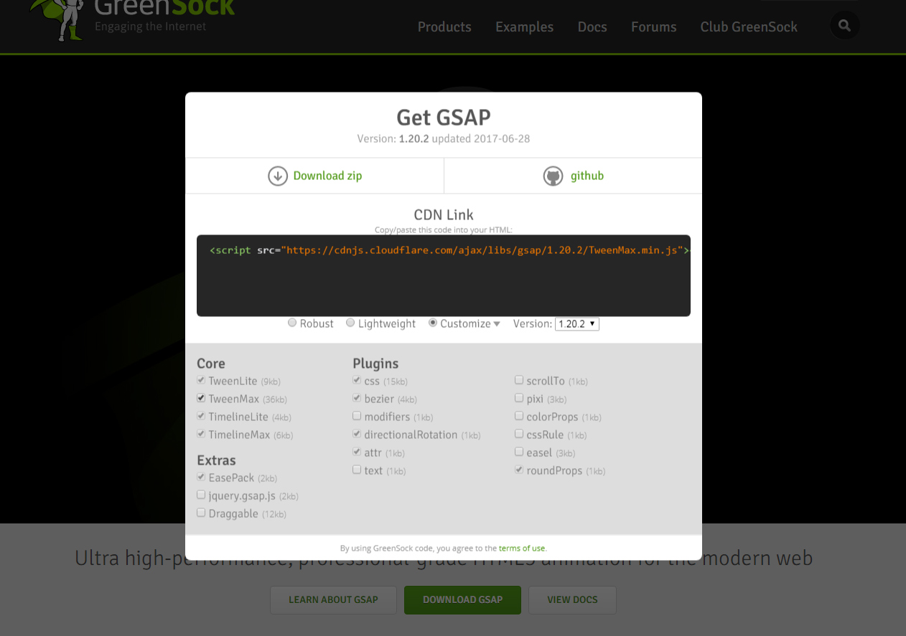

# GSAP GreenSock Animation Platform <div id="copyright"></div>
## 설치
### CDN ```js <script src="https://cdnjs.cloudflare.com/ajax/libs/gsap/1.20.2/TweenMax.min.js"></script> ``` 
### NPM ``` npm install gsap ```
## 기본 사용법
### `TweenMax.set()` 대상의 속성을 지정 | 종류 | 의미 | 단위 | |---|---|---| | `TARGET` | 적용 대상 | 배열, 객체, jQuery객체(유사 객체), CSS선택자(문자열) | | `VARS` | 적용 속성 | 객체 | ```js TweenMax.to(TARGET, VARS); ``` ```js TweenMax.to('div.box', 1, { x: -100, opacity: 0.75 }); ```
### `TweenMax.to()` 대상의 속성에 맞게 애니메이션 적용 | 종류 | 의미 | 단위 | |---|---|---| | `TARGET` | 적용 대상 | 배열, 객체, jQuery객체(유사 객체), CSS선택자(문자열) | | `DURATION` | 시간 | Seconds | | `VARS` | 적용 속성 | 객체 | ```js TweenMax.to(TARGET, DURATION, VARS); ``` ```js TweenMax.to('div.box', 1, { x: 100, opacity: 1, repeat: -1, yoyo: true, ease: Power0.easeNone }); ```
```html <div class="box"></div> ``` ```css .box { width: 100px; height: 100px; background: red; opacity: 0.5; } ``` ```js TweenMax.to('.box', 2, { width: 200, y: 100, opacity: 1, backgroundColor: 'blue', repeat: -1, yoyo: true, ease: Power0.easeNone }); ``` > 미리 지정된 속성을 애니메이션할 수 있습니다.
```html <div class="box"></div> ``` ```js TweenMax.set('.box', { width: 100, height: 100, backgroundColor: 'red', opacity: .5 }); TweenMax.to('.box', 2, { width: 200, y: 100, opacity: 1, backgroundColor: 'blue', repeat: -1, yoyo: true, ease: Power0.easeNone }); ``` > `TweenMax.set()`를 통해서 속성을 미리 지정한 후 애니메이션할 수도 있습니다.